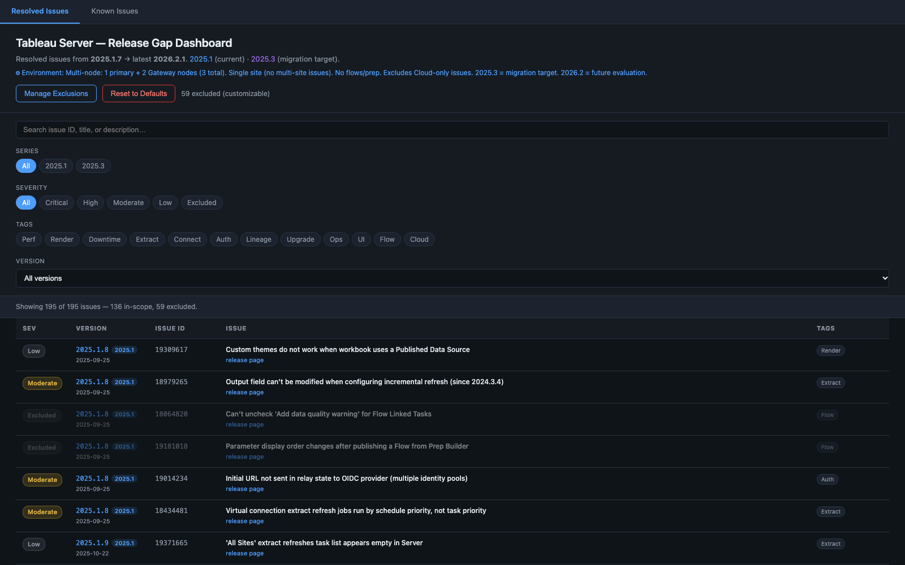
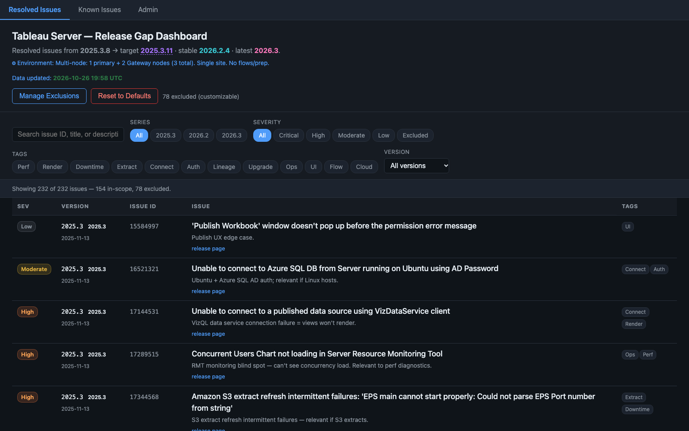
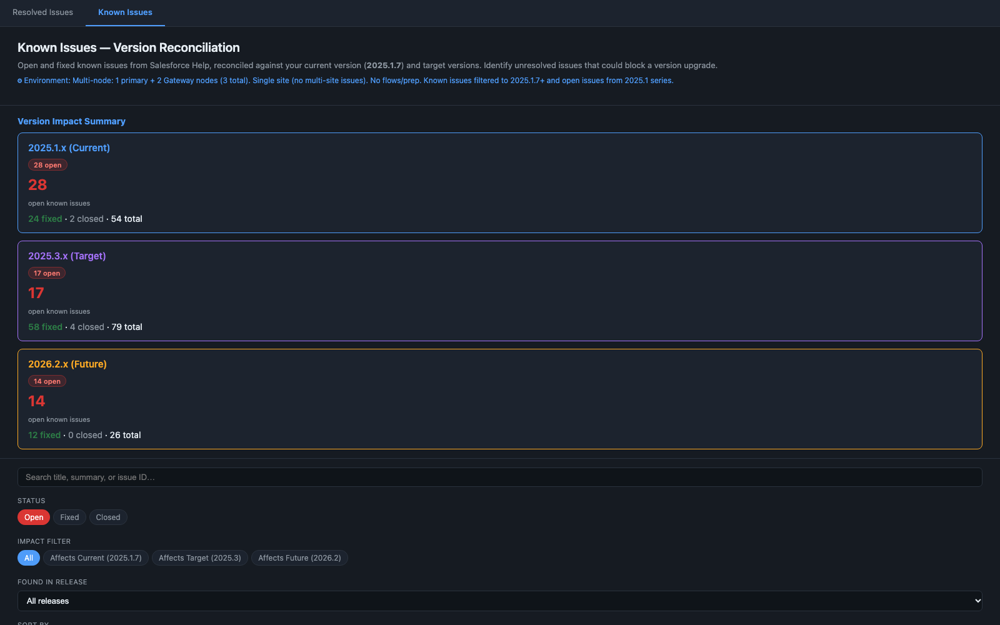
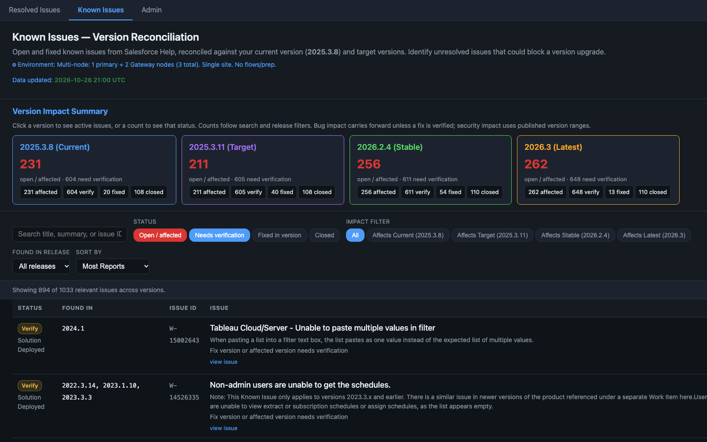
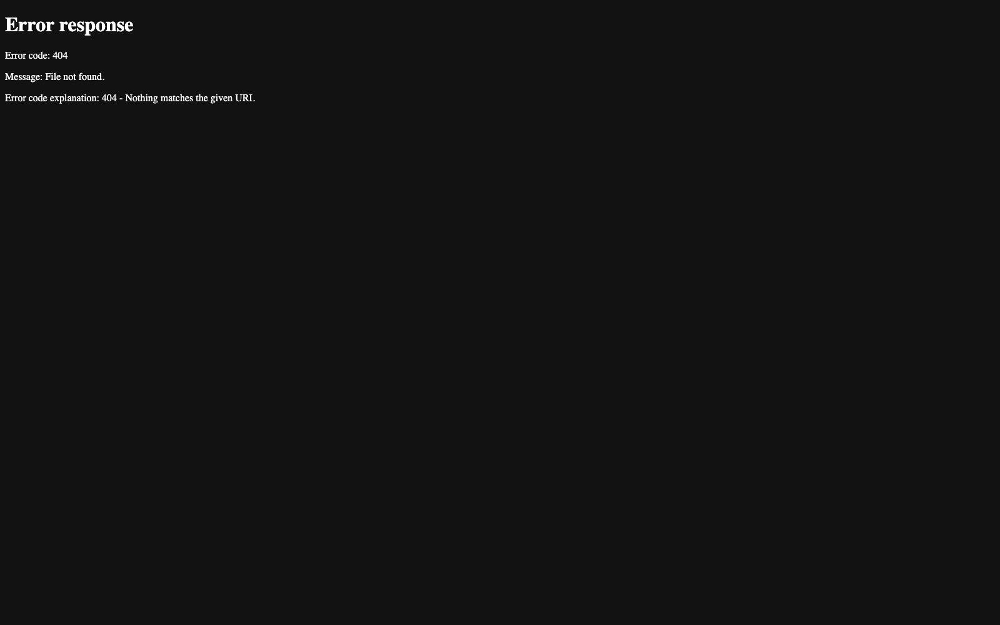
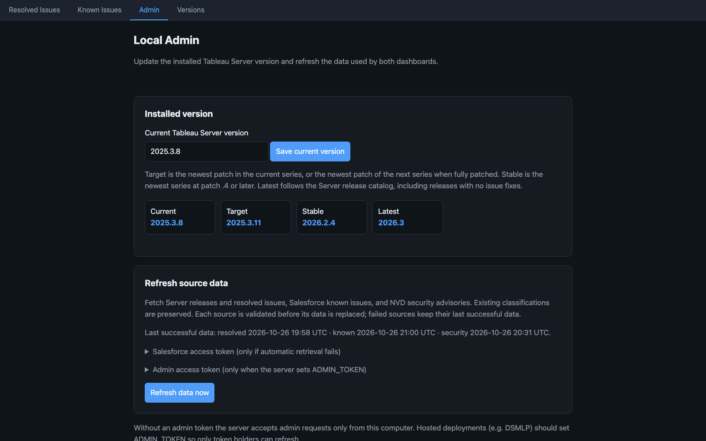

Before
After
Features
- Resolved-issues dashboard with manual series, severity, tag, version, and exclusion filters.
- Known-issues dashboard with hardcoded current, target, and future version cards.
- Static exclusion preferences saved in the browser.
- The same two dashboards, expanded around a shared version model and release catalog.
- Version impact cards now count affected, needs-verification, fixed, and closed issues.
- NVD security advisories are reconciled into the known-issues view, with vendor advisories preserved.
UI fixes
- Dense 14px typography and small controls made scanning difficult.
- Duplicate responsive CSS blocks created inconsistent sticky and mobile behavior.
- The two-page navigation had no common admin destination.
- Raised the base text and controls to an 18px system for easier reading.
- Normalized full-width bars, sticky stacking, navbar spacing, and responsive padding.
- Replaced decorative version/count labels with focusable buttons and visible focus states.
Dynamic enhancements
- Version roles and impact filters were hardcoded to 2025.1, 2025.3, and 2026.2.
- Each dashboard maintained its own comparison and impact logic.
- Changing version context required editing generated data.
- Shared version logic derives target, stable, and latest milestones from the release catalog.
- Series chips and impact cards regenerate from the installed version and current datasets.
- Changing the installed version synchronizes both dashboards and refreshes stale views.
- Validated source refreshes preserve the previous dataset when a source fails.
Admin page
- No admin page, local server API, or refresh workflow.
- Local Admin sets the installed Tableau Server version from release-aware suggestions.
- Shows current, target, stable, and latest milestones plus last-successful data timestamps.
- Refreshes resolved, known, and security sources with per-source status and failure retention.
- Supports optional Salesforce and admin tokens without saving them in the page.
Screenshots





